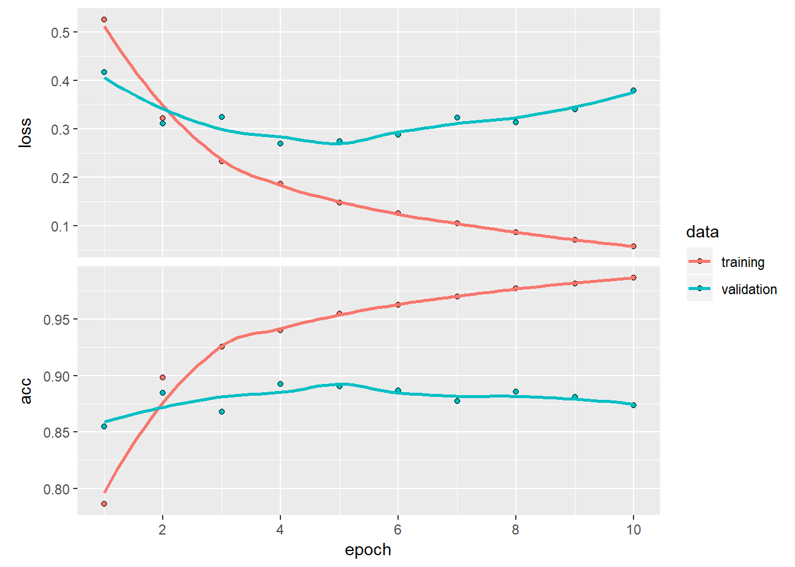

binary classification
library(keras)
imdb <- dataset_imdb(num_words = 10000)
train_data <- imdb$train$x
train_labels <- imdb$train$y
test_data <- imdb$test$x
test_labels <- imdb$test$yTraining data (similarily to test data) consists of rows of vectors filled with ids for words.
str(train_data[[1]])## int [1:218] 1 14 22 16 43 530 973 1622 1385 65 ...Labels indicate if the review is considered as positive (1) or negative (0).
train_labels[[1]]## [1] 1Ids can be translated to words using a list mapping ids to string-presentations. For better performance, only 10 000 most common words are used and rest replaced with question marks.
library(keras)
word_index <- dataset_imdb_word_index()
reverse_word_index <- names(word_index)
names(reverse_word_index) <- word_index
# Decodes the review. Note that the indices are offset by 3 because 0, 1, and
# 2 are reserved indices for "padding," "start of sequence," and "unknown."
decoded_review <- sapply(train_data[[1]], function(index) {
word <- if (index >= 3) reverse_word_index[[as.character(index - 3)]]
if (!is.null(word)) word else "?"
})
cat(decoded_review)## ? this film was just brilliant casting location scenery story direction everyone's really suited the part they played and you could just imagine being there robert ? is an amazing actor and now the same being director ? father came from the same scottish island as myself so i loved the fact there was a real connection with this film the witty remarks throughout the film were great it was just brilliant so much that i bought the film as soon as it was released for ? and would recommend it to everyone to watch and the fly fishing was amazing really cried at the end it was so sad and you know what they say if you cry at a film it must have been good and this definitely was also ? to the two little boy's that played the ? of norman and paul they were just brilliant children are often left out of the ? list i think because the stars that play them all grown up are such a big profile for the whole film but these children are amazing and should be praised for what they have done don't you think the whole story was so lovely because it was true and was someone's life after all that was shared with us allAs the data is presented in a vector of ids, it needs to be translated into a tensor.
vectorize_sequences <- function(sequences, dimension = 10000) {
# Creates an all-zero matrix of shape (length(sequences), dimension)
results <- matrix(0, nrow = length(sequences), ncol = dimension)
for (i in 1:length(sequences))
# Sets specific indices of results[i] to 1s
results[i, sequences[[i]]] <- 1
results
}x_train <- vectorize_sequences(train_data)
x_test <- vectorize_sequences(test_data)y_train <- as.numeric(train_labels)
y_test <- as.numeric(test_labels)library(keras)
model <- keras_model_sequential() %>%
layer_dense(units = 16, activation = "relu", input_shape = c(10000)) %>%
layer_dense(units = 16, activation = "relu") %>%
layer_dense(units = 1, activation = "sigmoid")model %>% compile(
optimizer = "rmsprop",
loss = "binary_crossentropy",
metrics = c("accuracy")
)val_indices <- sample(1:25000, 10000, replace=F)
x_val <- x_train[val_indices,]
partial_x_train <- x_train[-val_indices,]
y_val <- y_train[val_indices]
partial_y_train <- y_train[-val_indices]val_history <- model %>% fit(
partial_x_train,
partial_y_train,
epochs = 10,
batch_size = 512,
validation_data = list(x_val, y_val)
)plot(val_history)
model %>% predict(x_test[1:10,])## [,1]
## [1,] 0.041063890
## [2,] 0.999997139
## [3,] 0.999910593
## [4,] 0.975024998
## [5,] 0.990224183
## [6,] 0.921209335
## [7,] 0.999720633
## [8,] 0.002713791
## [9,] 0.999119818
## [10,] 0.996296465